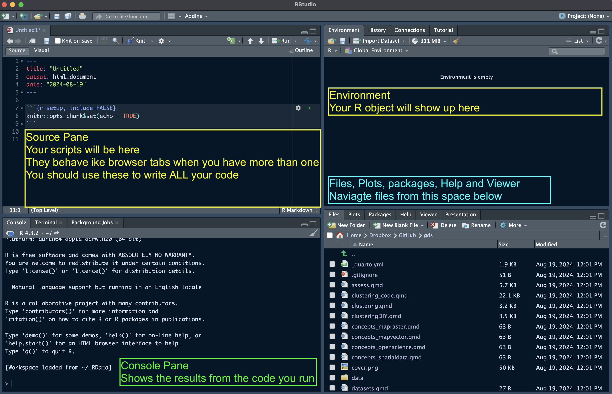

3 Lab: Introduction to R
The following material has been readapted from:
https://dereksonderegger.github.io/570L/1-introduction.html by Derek L. Sonderegger;
For the lab sessions and your assignment, you will need the following software:
R-4.2.2 (or higher)
RStudio 2022.12.0-353 (or higher)
The list of libraries in the next section
To install and update:
- R, download the appropriate version from The Comprehensive R Archive Network (CRAN)
- RStudio, download the appropriate version from Posit
3.1 R?
R is an open-source program that is commonly used in Statistics. It runs on almost every platform and is completely free and is available at www.r-project.org. Most of the cutting-edge statistical research is first available on R.
R is a script based language, so there is no point and click interface. While the initial learning curve will be steeper, understanding how to write scripts will be valuable because it leaves a clear description of what steps you performed in your data analysis. Typically you will want to write a script in a separate file and then run individual lines. This saves you from having to retype a bunch of commands and speeds up the debugging process.
3.2 R(Studio) Basics
We will be running R through the program RStudio which is located at rstudio.com. When you first open up RStudio the console window gives you some information about the version of R you are running and then it gives the prompt >. This prompt is waiting for you to input a command. The prompt + tells you that the current command is spanning multiple lines. In a script file you might have typed something like this:
for( i in 1:5 ){
print(i)
}Finding help about a certain function is very easy. At the prompt, just type help(function.name) or ?function.name. If you don’t know the name of the function, your best bet is to go the the web page www.rseek.org which will search various R resources for your keyword(s). Another great resource is the coding question and answer site stackoverflow.
3.2.1 Starting a session in RStudio
Upon startup, RStudio will look something like this.
Note: the Pane Layout and Appearance settings can be altered:
- on Windows by clicking RStudio>Tools>Global Options>Appearance or Pane Layout
- on Mac OS by clicking RStudio>Preferences>Appearance or Pane Layout.
You will also have a standard white background; but you can choose specific themes.
Source Panel (Top-Left)
This is where you write, edit, and view scripts, R Markdown/Quarto documents, or R scripts. It allows:
- Editing Scripts: Write and edit R scripts or documents (
.R,.Rmd,.qmd). - Executing the Code: Run lines, blocks, or the entire script directly from the editor.
Console Panel (Bottom-Left)
The Console is the main place to run R commands interactively. It allows:
- Executing the Code: Type and run R commands directly.
- Viewing outputs, warnings, and errors for immediate feedback.
- Browsing and reusing past commands (History Tab).
- Toggling between the R Console, and the Terminal (yuo don’t really need the latter).
Environment Panel (Top-Right)
This panel helps track variables, functions, and the history of commands used. It contains:
- Environment Tab: Shows all current variables, datasets, and objects in your session, including their structure and values.
- History Tab: Provides a record of past commands. You can re-run or move commands to the console or script.
Files / Plots / Packages / Help Panel (Bottom-Right)
This multifunctional panel is for file navigation, plotting, managing packages, viewing help, and managing jobs. It contains:
- Files Tab: Navigate, open, and manage files and directories within your project.
- Plots Tab: Displays plots generated in your session. You can export or navigate through multiple plots here.
- Packages Tab: Lists installed packages and allows you to install, load, and update packages.
- Help Tab: Displays help documentation for R functions, packages, and other resources. You can search for documentation by typing a function or package name.
At the start of a session, it’s good practice clearing your R environment (console):
rm(list = ls())In R, we are going to workin with relative paths. With the command getwd(), you can see where your working directory is currently set.
getwd() 3.2.2 Using the console
We can use the console to perform few operations. For example type in:
1+1[1] 2Slightly more complicated:
print("hello world")[1] "hello world"If you are unsure about what a command does, use the “Help” panel in your Files pane or type ?function in the console. For example, to see how the dplyr::rename() function works, type in ?dplyr::rename. When you see the double colon syntax like in the previous command, it’s a call to a package without loading its library.
3.2.3 R as a simple calculator
You can use R as a simple calculator. At the prompt, type 2+3 and hit enter. What you should see is the following
# Some simple addition
2+3[1] 5In this fashion you can use R as a very capable calculator.
6*8[1] 484^3[1] 64exp(1) # exp() is the exponential function[1] 2.718282R has most constants and common mathematical functions you could ever want. For example, the absolute value of a number is given by abs(), and round() will round a value to the nearest integer.
pi # the constant 3.14159265...[1] 3.141593abs(1.77) [1] 1.77Whenever you call a function, there will be some arguments that are mandatory, and some that are optional and the arguments are separated by a comma. In the above statements the function abs() requires at least one argument, and that is the number you want the absolute value of.
When functions require more than one argument, arguments can be specified via the order in which they are passed or by naming the arguments. So for the log() function, for example, which calculates the logarithm of a number, one can specify the arguments using the named values; the order woudn’t matter:
# Demonstrating order does not matter if you specify
# which argument is which
log(x=5, base=10) [1] 0.69897log(base=10, x=5)[1] 0.69897When we don’t specify which argument is which, R will decide that x is the first argument, and base is the second.
# If not specified, R will assume the second value is the base...
log(5, 10)[1] 0.69897log(10, 5)[1] 1.430677When we want to specify the arguments, we can do so using the name=value notation.
3.2.4 Variables Assignment
We need to be able to assign a value to a variable to be able to use it later. R does this by using an arrow <- or an equal sign =. While R supports either, for readability, I suggest people pick one assignment operator and stick with it.
Variable names cannot start with a number, include spaces, and they are case sensitive.
var <- 2*7.5 # create two variables
another_var = 5 # notice they show up in 'Environment' tab in RStudio!
var [1] 15var * another_var [1] 75As your analysis gets more complicated, you’ll want to save the results to a variable so that you can access the results later. if you don’t assign the result to a variable, you have no way of accessing the result.
3.2.5 Working with Scripts
Normally you would use the Console for quick calculations or executions. In this module, though, we are going to work with Quarto Markdown Scripts (.qmd files).
The R Markdown is an implementation of the Markdown syntax that makes it extremely easy to write webpages or scientific documents that include code. This syntax was extended to allow users to embed R code directly into more complex documents. Perhaps the easiest way to understand the syntax is to look at an at the RMarkdown website. The R code in a R Markdown document (.rmd file extension) can be nicely separated from regular text using the three backticks (3 times `, see below) and an instruction that it is R code that needs to be evaluated. A code chunk will look like:
for (i in 1:5) {print(i)}[1] 1
[1] 2
[1] 3
[1] 4
[1] 5** .qmd - the type of scripts we use - are just a more flexible development of .rmd files.**
Markdown files present several advantages compared to writing your code in the console or just using scripts. You’ll save yourself a huge amount of work by embracing Markdown files from the beginning; you will keep track of your code and your steps, be able to document and present how you did your analysis (helpful when writing the methods section of a paper), and it will make it easier to re-run an analysis after a change in the data (such as additional data values, transformed data, or removal of outliers) or once you spot an error. Finally, it makes the script more readable.
3.2.6 R Packages
One of the greatest strengths about R is that so many people have developed add-on packages to do some additional function. To download and install the package from the Comprehensive R Archive Network (CRAN), you just need to ask RStudio it to install it via the menu Tools -> Install Packages.... Once there, you just need to give the name of the package and RStudio will download and install the package on your computer.
Once a package is downloaded and installed on your computer, it is available, but it is not loaded into your current R session by default. To improve overall performance only a few packages are loaded by default and the you must explicitly load packages whenever you want to use them. You only need to load them once per session/script.
library(dplyr) # load the dplyr library, will be useful laterThis is just a quick intro to R, now move to the actual practical of week 1.